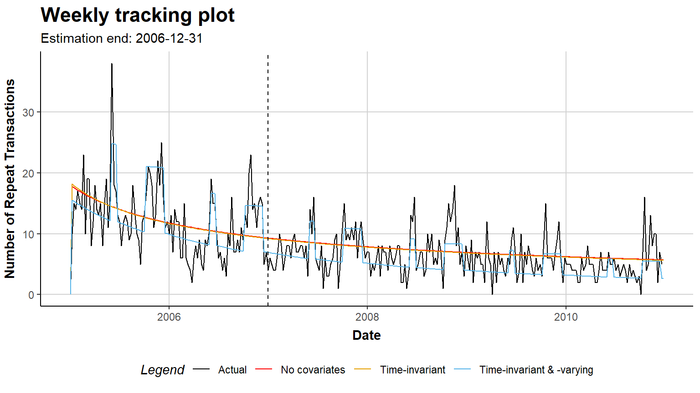

| Transaction opportunity | Contractual (attrition observed) | Non-contractual (attrition latent) |
|---|---|---|
| Continuous | Survival / hazard models; sBG on renewal cohorts. Example: mobile postpaid. | Pareto/NBD, BG/NBD, Pareto/GGG and covariate extensions. Example: apparel retail. |
| Discrete | Discrete-time survival; shifted-beta-geometric. Example: annual subscription. | BG/BB. Example: annual charity appeal. |
16 Customer-Base Analysis and Latent Attrition Models
Chapter 15 treated customer lifetime value as a managerial quantity: a number that allocates acquisition budget, prices a loyalty program, and, aggregated, tracks shareholder value. It surveyed four traditions for producing that number and showed each one working. This chapter goes down one level, into the tradition that has the longest run of published theory behind it and the smallest data appetite in front of it: customer-base analysis, the problem of inferring who in a customer base is still a customer at all.
The distinction is not pedantic. In a contractual business, attrition is an observed event with a date attached; churn is a dependent variable and the modeling problem is a survival problem of a familiar kind. In a non-contractual business, which is most retail, most hospitality, most e-commerce and most direct marketing, nobody resigns. A customer who has not bought in four months may have defected, or may be between trips. There is no dependent variable to regress, because the event of interest is never recorded. Customer-base analysis is the family of models that solves this by refusing to observe attrition and modeling it as latent: the customer buys at some rate while “alive,” dies at an unobserved moment, and everything the analyst wants (the probability the customer is still active, the transactions to expect next year, the discounted residual value) is recovered as a posterior quantity from the shape of the purchase history alone.
That family has been remarkably productive and remarkably static in one specific way. From Schmittlein, Morrison, and Colombo (1987) through the closed-form simplifications of the 2000s, the models took as input three numbers per customer, frequency, recency, and observation length, and nothing else. They took nothing else because the closed forms that made them attractive did not survive contact with covariates. A model that cannot see that a customer was mailed a catalogue in week 30, or that weeks 46 through 52 are the high season, cannot tell a marketer whether the catalogue worked, and pays for that blindness in predictive accuracy on exactly the periods a marketer cares about.
The organizing paper of this chapter closes that gap. Bachmann, Meierer, and Näf (2021) extend the Pareto/NBD so that both the purchase rate and the attrition rate are functions of covariates that change over time, while preserving the closed-form maximum likelihood solution that made the original model deployable. The extension is not a reparameterization; it changes what the sufficient statistics are (the exact timing of every transaction now matters, not just the last one), what the managerial expressions mean (a finite-horizon discounted transaction count replaces the infinite-horizon one), and what the model can be asked (whether a marketing action raises purchasing and churn simultaneously becomes a testable restriction). We develop the mathematics from primitives, replicate the estimation on the retail data that ships with the authors’ own software, and then place the whole enterprise in its literature, journal by journal, across marketing and economics.
16.1 What Customer-Base Analysis Asks
16.1.1 Four Quadrants, One Hard Cell
Two binary features of a business decide which model class is even admissible, and the taxonomy is worth restating because it is the single most common source of misapplied CLV models in practice.
The first feature is whether attrition is observed. In a contractual setting, subscriptions, insurance, telecom postpaid, B2B licensing, the customer must act to end the relationship, and the firm records the act. In a non-contractual setting, retail, e-commerce, restaurants, catalogue, most consumer packaged goods, the customer simply stops, silently.
The second feature is whether transactions can occur at any moment (continuous) or only at discrete opportunities (discrete): a charity that solicits once a year, a season-ticket renewal, a monthly billing cycle.
Only the right-hand column is customer-base analysis. In the left-hand column the analyst has a labelled event and can reach for the entire apparatus of duration econometrics; in the right-hand column there is no label, and the models below exist to manufacture a posterior belief where the label should have been.
16.1.2 The Managerial Expressions
Whatever the model, four quantities are asked of it, and the rest of the chapter is about how each is computed. Let \(\mathcal{F}\) denote everything observed about a customer. For the Pareto/NBD this will be \(\mathcal{F} = \{x, t_x, T\}\): the number of repeat transactions, the time of the last one, and the length of the observation window.
- P(alive), the posterior probability the customer had not yet churned at \(T\).
- CET, the conditional expected transactions \(E(X(T, T+t) \mid \mathcal{F})\) over a finite horizon of length \(t\).
- DERT, the discounted expected residual transactions, which is CET’s infinite-horizon, discounted analogue.
- Expected spend per transaction \(E(m \mid \mathcal{F})\), supplied by a separate model.
Following Gupta et al. (2006) and the general formulation used in the software literature (Meierer et al. 2026), value is the discounted integral of cash flow weighted by the probability of still being alive to generate it,
\[ E(CLV \mid \mathcal{F}) = \int_{T}^{\infty} E[V(t) \mid \mathcal{F}]\, S(t \mid \mathcal{F})\, d(t)\, dt , \tag{16.1}\]
where \(S(t \mid \mathcal{F})\) is the survivor function and \(d(t)\) the discount factor. Under the standard assumption that spend per transaction is independent of transaction timing, cash flow factors out and Equation 16.1 collapses to a product of a transaction quantity and a monetary quantity,
\[ DERT = \int_{T}^{\infty} \lambda(t)\, S(t \mid \mathcal{F})\, d(t)\, dt , \qquad E(CLV \mid \mathcal{F}) = E(m \mid \mathcal{F}) \cdot DERT . \tag{16.2}\]
This factorization is what lets the field maintain two separate literatures, one on latent attrition and one on spend, and bolt them together at the end. It is also the first assumption to interrogate when a CLV number looks wrong: heavy buyers who spend differently per basket break it, and Glady, Lemmens, and Croux (2015) document exactly that dependence between timing, spending and dropout.
16.2 The Pareto/NBD from Primitives
Schmittlein, Morrison, and Colombo (1987) is the origin model and still the reference point against which everything in this chapter is measured. It is built from four assumptions, two per process, and the whole of its closed-form machinery follows mechanically from them.
Attrition. A customer’s unobserved lifetime \(\omega\) is exponential with rate \(\mu\),
\[ f(\omega \mid \mu) = \mu e^{-\mu \omega} , \tag{16.3}\]
and \(\mu\) is Gamma-distributed across the population with shape \(s\) and scale \(\beta\),
\[ g(\mu) = \frac{\beta^{s} \mu^{s-1} e^{-\mu\beta}}{\Gamma(s)} . \tag{16.4}\]
Mixing Equation 16.3 over Equation 16.4 gives the lifetime of a randomly chosen customer as a Pareto distribution of the second kind, which is where half the model’s name comes from:
\[ f(\omega) = \int_{0}^{\infty} f(\omega \mid \mu) g(\mu)\, d\mu = \frac{s}{\beta}\left(\frac{\beta}{\beta+\omega}\right)^{s+1} . \tag{16.5}\]
Purchasing. While alive, the customer buys according to a Poisson process with rate \(\lambda\), so that
\[ P(X(t) = x \mid \lambda,\, t < \omega) = \frac{(\lambda t)^{x} e^{-\lambda t}}{x!}, \qquad x = 0, 1, 2, \dots \tag{16.6}\]
and \(\lambda\) is Gamma-distributed with shape \(r\) and scale \(\alpha\),
\[ g(\lambda) = \frac{\alpha^{r} \lambda^{r-1} e^{-\lambda\alpha}}{\Gamma(r)} . \tag{16.7}\]
Mixing Equation 16.6 over Equation 16.7 yields the negative binomial distribution, the other half of the name:
\[ P(X(t) = x \mid t < \omega) = \frac{\Gamma(r+x)}{\Gamma(r)\,x!} \left(\frac{\alpha}{\alpha+t}\right)^{r}\left(\frac{t}{\alpha+t}\right)^{x} . \tag{16.8}\]
The individual likelihood. A customer observed to time \(T\) with \(x\) repeat transactions, the last at \(t_x\), is in one of two states: still alive (\(\omega > T\)), or dead at some \(\omega \in (t_x, T]\). Conditional on being alive throughout, the likelihood is the product of exponential inter-transaction densities and the survivor term, \(\lambda^{x} e^{-\lambda T}\); conditional on dying at \(\omega\), it is \(\lambda^{x} e^{-\lambda \omega}\). Weighting the two branches by their probabilities and integrating out the death time gives
\[ \begin{aligned} L(\lambda, \mu \mid x, t_x, T) &= \lambda^{x} e^{-\lambda T} P(\omega > T \mid \mu) + \int_{t_x}^{T} \lambda^{x} e^{-\lambda\omega} f(\omega \mid \mu)\, d\omega \\ &= \frac{\lambda^{x}\mu}{\lambda+\mu} e^{-(\lambda+\mu)t_x} + \frac{\lambda^{x+1}}{\lambda+\mu} e^{-(\lambda+\mu)T} . \end{aligned} \tag{16.9}\]
Marginalizing Equation 16.9 over the two Gamma mixing distributions produces a closed-form expression in \((r, \alpha, s, \beta)\) involving the Gaussian hypergeometric function, and the four parameters are estimated by maximizing
\[ \sum_{i=1}^{N} \log L(r, \alpha, s, \beta \mid x_i, t_{x_i}, T_i) . \tag{16.10}\]
Two features of Equation 16.9 deserve emphasis because both are lost in the extension of Section 16.4.
16.2.1 Why Recency and Frequency Are Sufficient
Notice what does not appear in Equation 16.9: the timing of transactions \(t_1, \dots, t_{x-1}\). Only \(t_x\) survives. This is a consequence of the memoryless property of the exponential inter-arrival times, and it is the reason the entire literature summarizes a customer by the triple \((x, t_x, T)\). The practical payoff is enormous, a firm with ten million customers stores three numbers each, and it is why these models scale to customer bases where a hierarchical Bayes alternative would not. The interpretive payoff is the iso-value curve of Fader, Hardie, and Lee (2005b): customers with different histories but the same \((x, t_x)\) have identical predicted futures, which turns the recency-frequency grid of practitioner RFM scoring into a model-implied object rather than a heuristic one.
The intuition behind the posterior is worth stating in words, because it is what makes these models feel like inference rather than curve-fitting. Frequency and recency carry opposite signals. Many purchases raise the estimate of \(\lambda\), which raises value; but many purchases also mean that a long recent silence is more surprising, which raises the posterior probability of death. A customer who bought twenty times and has been quiet for six months is in worse shape than one who bought twice and has been quiet for six months, because for the frequent buyer six months of silence is many missed opportunities and for the infrequent buyer it is barely one. The models formalize precisely this trade-off, and it is not something an RFM score computed by hand gets right.
Ratifying the point, Wübben and Wangenheim (2008) find that simple managerial heuristics (a hiatus rule: “a customer is dead if they have not bought in \(h\) periods”) often match the probability models for aggregate-level predictions, while Zhang, Bradlow, and Small (2015) show that adding clumpiness, the degree to which purchases arrive in bursts, to recency-frequency-monetary information improves individual-level prediction. Both results are about the same thing: how much of a purchase history the \((x, t_x, T)\) summary throws away.
16.2.2 The Model Zoo
The Pareto/NBD’s inconvenience is computational: the hypergeometric functions in its marginal likelihood are fragile to optimize. Most of the subsequent literature can be read as trading one distributional assumption for tractability or for realism.
| Model | Attrition process | Transaction process | Bought what | Source |
|---|---|---|---|---|
| Pareto/NBD | Exponential / Gamma | Poisson / Gamma | The reference specification | Schmittlein, Morrison, and Colombo (1987) |
| BG/NBD | Geometric after each buy / Beta | Poisson / Gamma | Removes hypergeometrics; near-identical fit | Fader, Hardie, and Lee (2005a) |
| MBG/NBD | Geometric incl. at time 0 / Beta | Poisson / Gamma | Fixes BG/NBD’s inability to let zero-repeaters die | Batislam, Denizel, and Filiztekin (2007) |
| BG/BB | Beta-Bernoulli (discrete) | Beta-binomial (discrete) | Correct estimand when opportunities are discrete | Fader, Hardie, and Shang (2010) |
| Pareto/GGG | Exponential / Gamma | Gamma-timing (regularity) / Gamma | Uses inter-purchase regularity, not just recency | Platzer and Reutterer (2016) |
| GGom/NBD | Gompertz / Gamma | Poisson / Gamma | Non-monotone (rising then falling) hazard of death | Bemmaor and Glady (2012) |
| HB Pareto/NBD | Exponential / lognormal | Poisson / lognormal | Individual-level covariates and correlated processes | Abe (2009) |
| Pareto/NBD + dyn. cov. | Exp. with time-varying rate / Gamma | Poisson with time-varying rate / Gamma | Time-varying covariates with closed-form MLE | Bachmann, Meierer, and Näf (2021) |
| HMM | Markov states | State-dependent | Relationship states with transitions, not one death | Netzer, Lattin, and Srinivasan (2008) |
| Bayesian nonparametric | Exponential / nonparametric | Poisson / nonparametric | Drops the Gamma prior; visualizes the fitted heterogeneity | Dew and Ansari (2018) |
| Changepoint | Exponential / Gamma | Poisson / Gamma | Structural breaks that hit whole acquisition cohorts | Gopalakrishnan, Bradlow, and Fader (2017) |
Three of these rows carry lessons that recur later. Fader, Hardie, and Lee (2005a)’s BG/NBD buys its tractability with a structural quirk: because dropout is a coin flip taken after a purchase, a customer who never repeats can never die, which Batislam, Denizel, and Filiztekin (2007) correct in the MBG/NBD by allowing dropout at time zero. Jerath, Fader, and Hardie (2011) generalize the death process itself, showing that “death” in these models is a modeling convention with consequences for how quickly value is written off. And Bemmaor and Glady (2012)’s Gamma-Gompertz/NBD replaces the exponential lifetime with a Gompertz one so that the hazard of dying can rise and then fall, a shape the exponential cannot produce; the subsequent comment by Adler (2023) on that paper’s estimation is a useful reminder that closed forms in this literature are not always as closed as they look.
Alongside the timing models sits the spend model. The de facto standard is the Gamma-Gamma of Colombo and Jiang (1999) and Fader, Hardie, and Lee (2005b). With \(\bar z = \sum_{i=1}^{x} z_i / x\) the observed average transaction value, spend per transaction is Gamma with shape \(p\) and rate \(\nu\), \(\nu\) is itself Gamma with shape \(q\) and scale \(\gamma\) across customers, and the marginal density of \(\bar z\) given \(x\) is
\[ f(\bar z \mid p, q, \gamma; x) = \frac{1}{\bar z\, B(px, q)} \left(\frac{\gamma}{\gamma + x\bar z}\right)^{q} \left(\frac{x \bar z}{\gamma + x \bar z}\right)^{px} , \tag{16.11}\]
with \(B(\cdot,\cdot)\) the Beta function. Note what Equation 16.11 does not contain: time. The spend model is stationary by construction, and no published covariate extension of it was implemented at the time of writing (Meierer et al. 2026). Everything this chapter says about covariates applies to the timing side only, which is a real limitation when the marketing action being evaluated is a discount.
16.3 The Covariate Problem
Two motivations push against the covariate-free tradition, and they are worth keeping separate because they impose different standards of proof.
The first is prediction. Gamma heterogeneity is a black box: it concedes that customers differ and declines to say how. If some of that dispersion is explained by observables (acquisition channel, gender, region, tenure), moving it out of the mixing distribution and into a systematic component should sharpen individual-level forecasts, which is where the Pareto/NBD is weakest.
The second is inference. A firm that mails a catalogue wants to know what the catalogue did. This is a causal question dressed as a modeling one, and the covariate coefficient answers it only under an exogeneity assumption that the firm’s own targeting rule usually violates. We return to this in Section 16.7; it is the single largest threat to the interpretation of these models, and the literature is candid about it (Shugan 2004; Ebbes, Papies, and Heerde 2011).
16.3.1 Time-Invariant Covariates
The time-invariant extension, due to Fader and Hardie (2007), scales the two latent rates multiplicatively: \(\lambda = \lambda_0 \exp(\boldsymbol{\gamma}_{purch}' \mathbf{x}^{P})\) and \(\mu = \mu_0 \exp(\boldsymbol{\gamma}_{attr}' \mathbf{x}^{A})\), with \(\lambda_0\) and \(\mu_0\) retaining their Gamma priors. Because the covariates are constants, the whole construction is a reparameterization: each customer’s \(\alpha\) and \(\beta\) are simply rescaled, and the closed-form likelihood survives untouched. The coefficients are semi-elasticities of the two rates (Gupta 1991): a one-unit change in a component of \(\mathbf{x}^{P}\) multiplies the average purchase rate by \(\exp(\gamma_{purch})\), and for a covariate entered in logs the coefficient reads directly as a rate elasticity.
16.3.2 Why Time-Varying Is Different
Time-varying covariates break that convenience, and it is worth being precise about where. The literature groups them into two kinds (Platzer and Reutterer 2016): seasonality, which typically moves every customer at once (holidays, paydays, school terms), and marketing activity, which is often customer-specific (a catalogue mailed to this person in week 30).
There is a direct antecedent worth naming, because Bachmann, Meierer, and Näf (2021)’s claim to novelty is narrower than it first appears. Schweidel and Knox (2013) had already brought direct marketing activity into a latent attrition model, and Oest and Knox (2011) had brought complaints in. What was missing was a general treatment of arbitrary time-varying covariates in the continuous-time Pareto/NBD that preserves the closed-form maximum likelihood, and that is the gap being closed.
Once \(\lambda\) is a function of time, three things fail simultaneously.
Inter-transaction times are no longer identically distributed, so the exponential memorylessness that collapsed the history to \((x, t_x, T)\) is gone: the distribution of the gap between purchases \(j-1\) and \(j\) depends on when purchase \(j-1\) happened, because that determines which covariate values were in force. The sufficient statistic becomes the full vector \(\mathbf{t} = (t_1, \dots, t_x)\).
The attrition density is no longer exponential either. It now depends on the entire covariate path up to the death time, not on a single rate.
And the infinite-horizon integral in Equation 16.2 becomes undefined in practice, because it presumes knowledge of \(\lambda(t)\) for all future \(t\), which is exactly what a firm does not have for a covariate like “was a catalogue mailed.”
Bachmann, Meierer, and Näf (2021) resolve all three, and the resolution is the substance of this chapter.
16.4 Time-Varying Contextual Factors
16.4.1 Specification
Let \(\mathbf{x}^{P}(s)\) and \(\mathbf{x}^{A}(s)\) be functions mapping a time point \(s\) to the covariate vectors relevant to the purchase and attrition processes at that moment. These are individual-level functions; the customer subscript is suppressed. The key parameterization is that they are piecewise constant on a grid of equidistant intervals (a week, say), returning the value \(\mathbf{x}^{P}_k\) of the interval \(k\) containing \(s\). The discretization is a property of the covariate data, not of the processes: the transaction and attrition processes remain continuous-time, and the intervals can be made arbitrarily fine.
The two rates then become
\[ \lambda(t) = \lambda_0 \exp\!\big(\boldsymbol{\gamma}_{purch}' \mathbf{x}^{P}(t)\big), \qquad \mu(t) = \mu_0 \exp\!\big(\boldsymbol{\gamma}_{attr}' \mathbf{x}^{A}(t)\big), \tag{16.12}\]
with \(\lambda_0 \sim \text{Gamma}(r, \alpha)\) and \(\mu_0 \sim \text{Gamma}(s, \beta)\) exactly as in Equation 16.7 and Equation 16.4. All the heterogeneity machinery of the original model is retained; what changes is that each customer’s rate is now a step function in time rather than a constant.
The purchase process becomes a non-homogeneous Poisson process. The number of transactions in an interval \((s_1, s_2]\) is
\[ P\big(X(s_1, s_2) = x \mid \lambda(t)\big) = \frac{[\Lambda(s_1, s_2)]^{x}}{x!} \exp[-\Lambda(s_1, s_2)], \qquad \Lambda(s_1, s_2) = \int_{s_1}^{s_2} \lambda(s)\, ds . \tag{16.13}\]
The attrition density is driven by the cumulative hazard along the covariate path,
\[ f\big(\omega \mid \mu(t)\big) = \mu(\omega) \exp[-M(\omega)], \qquad M(\omega) = \int_{0}^{\omega} \mu(s)\, ds . \tag{16.14}\]
Because \(\lambda(\cdot)\) and \(\mu(\cdot)\) are piecewise constant, both integrals are finite sums of rectangles, which is the entire trick: \(\Lambda\) and \(M\) are available in closed form interval by interval, so the awkward objects in Equation 16.13 and Equation 16.14 never require numerical integration.
16.4.2 The Likelihood
Combining the two processes gives an individual likelihood
\[ L\big(\alpha, r, \beta, s, \boldsymbol{\gamma}_{purch}, \boldsymbol{\gamma}_{attr} \mid \mathbf{X}^{P}, \mathbf{X}^{A}, x, \mathbf{t}, T\big), \tag{16.15}\]
where the covariate histories enter as the full sequences \(\mathbf{X}^{P} = (\mathbf{x}^{P}_1, \dots, \mathbf{x}^{P}_{k_T})\) and \(\mathbf{X}^{A} = (\mathbf{x}^{A}_1, \dots, \mathbf{x}^{A}_{k_T})\) over the \(k_T\) intervals covering the observation window.
The structural result of Bachmann, Meierer, and Näf (2021) is that Equation 16.15 remains closed form. It is a sum of terms each of which has the same functional shape as the standard Pareto/NBD likelihood Equation 16.9, evaluated on a single covariate interval. The customer’s death, if it occurred, happened in exactly one interval; conditioning on which interval that was, the rates are constant within it, and the standard algebra applies. Summing over the intervals in which death could have occurred, weighted by the probability of surviving to each, reassembles the likelihood. No simulation, no data augmentation, no MCMC: the model is still maximum likelihood, and it still runs on a laptop for a customer base in the millions.
The price is the one flagged in Section 16.3.2: the likelihood now contains \(\mathbf{t} = (t_1, \dots, t_x)\), every transaction date, not just the last. Recency is no longer sufficient. Data storage grows from three numbers per customer to a full transaction log plus a covariate panel with one row per customer-period, and estimation time grows with it, from seconds to minutes on the data in Section 16.6.
16.4.3 DECT, Not DERT
The managerial expressions change in one visible way. DERT in Equation 16.2 integrates to infinity, which under 1 would require the analyst to assert covariate values for all future time. Bachmann, Meierer, and Näf (2021) therefore define the discounted expected conditional transactions (DECT), the same discounted quantity over a finite horizon for which covariate paths are actually available. Software reports DECT in place of DERT whenever a model carries time-varying covariates (Meierer et al. 2026), and the substitution is not cosmetic: DECT is bounded by the horizon and will generally be smaller than the DERT the same customer would have been assigned by a covariate-free model. Comparing a covariate model’s CLV to a base model’s CLV without noticing this substitution is a live way to produce a spurious “the covariates destroyed value” finding.
16.4.4 Nesting and What Identifies the Coefficients
The specification nests cleanly. Set \(\boldsymbol{\gamma}_{purch} = \boldsymbol{\gamma}_{attr} = \mathbf{0}\) and Equation 16.15 returns the standard Pareto/NBD; hold the covariates constant across all intervals and it returns the time-invariant extension of Section 16.3.1. Model comparison is therefore a likelihood ratio test on nested specifications, and the AIC/BIC ordering across the three is interpretable.
Identification of \(\boldsymbol{\gamma}_{purch}\) comes from within-customer, over-time variation: whether this customer’s purchases cluster in the intervals when the covariate was high. Identification of \(\boldsymbol{\gamma}_{attr}\) is more delicate and comes from the timing of the last observed transaction relative to the covariate path, since the model must attribute a long silence either to a low purchase rate or to death. This asymmetry is why the attrition coefficients in Section 16.6 are estimated far less precisely than the transaction coefficients, and why practitioners who care mainly about prediction sometimes include covariates only in the purchase process, halving the parameter count for most of the accuracy gain.
16.5 Advanced Extensions
16.5.1 Correlated Processes
Every model so far assumes \(\lambda \perp \mu\): how often a customer buys tells you nothing about how quickly they will churn. That is a strong claim, and Glady, Lemmens, and Croux (2015) reject it empirically. The Sarmanov family provides a tractable dependence structure, writing the joint density as the independent product plus a correction term built from the same univariate densities:
\[ \begin{aligned} g(\lambda, \mu \mid \alpha, r, \beta, s, m) &= g(\lambda \mid r, \alpha)\, g(\mu \mid s, \beta) \\ &\quad + m \left(\frac{\alpha}{1+\alpha}\right)^{r}\left(\frac{\beta}{1+\beta}\right)^{s} \big[g(\lambda \mid r, \alpha+1) - g(\lambda \mid r, \alpha)\big] \big[g(\mu \mid s, \beta+1) - g(\mu \mid s, \beta)\big] . \end{aligned} \tag{16.16}\]
The mechanism is transparent once you see that \(g(\lambda \mid r, \alpha+1)\) is smaller than \(g(\lambda \mid r, \alpha)\) for large \(\lambda\), so each bracket is negative in the upper tail and the product is positive there. A positive \(m\) therefore piles density where both rates are high or both are low. Because Equation 16.16 is a linear combination of independent-case densities, the correlated likelihood is a linear combination of independent-case likelihoods: writing \(\tilde L(\alpha, \beta)\) for the uncorrelated likelihood,
\[ \begin{aligned} L(\alpha, r, \beta, s, m \mid x, t, T) &= \tilde L(\alpha, \beta) + m \left(\frac{\alpha}{1+\alpha}\right)^{r}\left(\frac{\beta}{1+\beta}\right)^{s} \\ &\quad \times \big[\tilde L(\alpha+1, \beta+1) - \tilde L(\alpha+1, \beta) - \tilde L(\alpha, \beta+1) + \tilde L(\alpha, \beta)\big] . \end{aligned} \tag{16.17}\]
The parameter \(m\) is not itself a correlation; the implied correlation is
\[ p_m = m\, \frac{\sqrt{r}}{1+\alpha}\left(\frac{\alpha}{1+\alpha}\right)^{r} \frac{\sqrt{s}}{1+\beta}\left(\frac{\beta}{1+\beta}\right)^{s} . \tag{16.18}\]
A positive \(p_m\) says heavy buyers churn faster, which is the empirically common sign in categories where high frequency signals a short, intense relationship rather than loyalty.
16.5.2 Regularization and Equality Constraints
Two further devices matter once covariate counts grow. Placing Gaussian priors \(\boldsymbol{\gamma}_{purch} \sim N(0, 1/\lambda_1^{reg} I)\) and \(\boldsymbol{\gamma}_{attr} \sim N(0, 1/\lambda_2^{reg} I)\) turns estimation into the penalized problem
\[ \arg\max \sum_{i=1}^{n} L\big(\cdot \mid \mathbf{X}^{P}_i, \mathbf{X}^{A}_i, x_i, \mathbf{t}_i, T_i\big) - \lambda_1^{reg}\|\boldsymbol{\gamma}_{purch}\|^{2} - \lambda_2^{reg}\|\boldsymbol{\gamma}_{attr}\|^{2} , \tag{16.19}\]
an \(L_2\) penalty that stabilizes an otherwise ill-conditioned optimization. (The symbol \(\lambda^{reg}\) here is a regularization weight and has nothing to do with the purchase rate \(\lambda\); the collision is unfortunate and standard.)
The second device is inferentially more interesting. Imposing
\[ \boldsymbol{\gamma}_{purch} \equiv \boldsymbol{\gamma}_{attr} \tag{16.20}\]
for a covariate present in both processes forces the optimizer to use one coefficient for both. The constrained model is a valid null against which a likelihood ratio test asks a genuinely managerial question: does this marketing activity affect purchasing and churning differently? A campaign that lifts transactions while also accelerating attrition is a campaign that borrows from the future, and Equation 16.20 is how the model is made to answer whether that is happening.
flowchart TB L0["Purchase heterogeneity<br/>lambda_0 ~ Gamma(r, alpha)"] --> LT CP["Time-varying covariates<br/>lambda(t) = lambda_0 x exp(gamma_purch' x_P(t))"] --> LT M0["Attrition heterogeneity<br/>mu_0 ~ Gamma(s, beta)"] --> MT CA["Time-varying covariates<br/>mu(t) = mu_0 x exp(gamma_attr' x_A(t))"] --> MT MT["Attrition rate path mu(t)"] --> W["Unobserved lifetime<br/>omega ~ Exp with cumulative hazard M(omega)"] LT["Purchase rate path lambda(t)"] --> B["Purchases t_j ~ non-homogeneous<br/>Poisson on (0, omega]"] W --> B B --> DT["CET and DECT<br/>(finite horizon)"] S0["Spending heterogeneity<br/>nu ~ Gamma(q, gamma)"] --> SP["Spend z_j ~ Gamma(p, nu)<br/>stationary, no covariates"] SP --> ES["Expected spend per transaction"] DT --> CLV["Predicted CLV = DECT x E(m)"] ES --> CLV
16.6 Replication: An Apparel Retailer’s Acquisition Cohort
Everything above is now estimated on real transaction data. We use the apparel retailer data that ships with CLVTools (Bachmann et al. 2025), the package written by the authors of Bachmann, Meierer, and Näf (2021), which is also the running case study in their software paper (Meierer et al. 2026). Using their data and their implementation makes this a genuine replication: the coefficients reported below can be checked against the published ones.
16.6.1 The Data
apparelTrans is a single acquisition cohort, all 600 customers made their first purchase on 2005-01-02, observed for six years. apparelStaticCov carries two time-invariant covariates (gender, acquisition channel) and apparelDynCov carries a weekly High.Season indicator alongside repeated copies of the time-invariant ones, because the dynamic-covariate interface requires one row per customer-week.
Code
library(CLVTools)
library(data.table)
library(dplyr)
library(knitr)
data("apparelTrans")
data("apparelStaticCov")
data("apparelDynCov")
data("apparelDynCovFuture")
head(apparelTrans, 3)
#> Id Date Price
#> <char> <Date> <num>
#> 1: 1 2005-01-02 230.30
#> 2: 1 2005-09-06 84.39
#> 3: 1 2006-01-18 131.07
head(apparelDynCov, 3)
#> Id Cov.Date High.Season Gender Channel
#> <char> <Date> <num> <num> <num>
#> 1: 1 2005-01-02 0 0 0
#> 2: 1 2005-01-09 0 0 0
#> 3: 1 2005-01-16 0 0 0We split the history into a 104-week estimation period and leave everything after it as holdout. That split is a modelling decision with real content: Section 16.7 returns to why two years, rather than one, is the right default when seasonality is present.
Code
clv.apparel <- clvdata(apparelTrans, date.format = "ymd", time.unit = "week",
estimation.split = 104,
name.id = "Id", name.date = "Date", name.price = "Price")
summary(clv.apparel)
#> CLV Transaction Data
#>
#> Time unit Weeks
#> Estimation length 104.0000 Weeks
#> Holdout length 207.0000 Weeks
#>
#> Transaction Data Summary
#> Estimation Holdout Total
#> Period Start 2005-01-02 2007-01-01 2005-01-02
#> Period End 2006-12-31 2010-12-20 2010-12-20
#> Number of customers - - 600
#> First Transaction in period 2005-01-02 2007-01-01 2005-01-02
#> Last Transaction in period 2006-12-31 2010-12-20 2010-12-20
#> Total # Transactions 1866 1317 3183
#> Mean # Transactions per cust 3.110 5.557 5.305
#> (SD) 2.714 5.123 6.119
#> Mean Spending per Transaction 40.545 36.977 39.069
#> (SD) 73.362 55.356 66.519
#> Total Spending 75657.730 48699.170 124356.900
#> Total # zero repeaters 213 - -
#> Percentage of zero repeaters 35.500 - -
#> Mean Interpurchase time 24.823 30.604 37.817
#> (SD) 19.417 24.756 42.339The summary reports the number that governs everything downstream: 35.5% of the cohort are zero repeaters, customers who bought once and never returned. A latent-attrition model has to place those customers somewhere, and the choice of death process (Section 16.2.2) is largely a fight over how fast to write them off.
16.6.2 Baseline: Pareto/NBD and Gamma-Gamma
These reproduce the published estimates exactly: \(r = 1.4490\), \(\alpha = 48.6361\), \(s = 0.5613\), \(\beta = 46.8844\) for the timing model and \(p = 3.099\), \(q = 5.654\), \(\gamma = 56.504\) for the spend model (Meierer et al. 2026). The ratios are the interpretable quantities: \(r/\alpha \approx 0.030\) is the average customer’s weekly purchase rate and \(s/\beta \approx 0.012\) the average weekly attrition rate.
Resist the temptation to invert that second number into a mean lifetime. The reciprocal \(\beta/s \approx 84\) weeks is a convenient scale but it is not \(E[\omega]\): the mean of the Pareto II lifetime distribution in Equation 16.5 is \(\beta/(s-1)\), which for \(s = 0.5613 < 1\) does not exist. The fitted mixture puts enough mass near \(\mu = 0\) that the population contains effectively immortal customers, which is the formal version of the caution in Schmittlein and Peterson (1994) about long estimation windows and is a standing reason to report DERT or DECT, which are discounted and therefore finite, rather than an expected lifetime.
16.6.3 Adding Time-Invariant Covariates
The formula interface takes a two-part right-hand side with no dependent variable, because the dependent variables (\(x_i\), \(t_{x_i}\), \(T_i\)) are derived from the transaction log rather than supplied. The part before the | selects covariates for the attrition process, the part after for the purchase process.
Code
clv.static <- SetStaticCovariates(
clv.data = clv.apparel,
data.cov.life = apparelStaticCov, data.cov.trans = apparelStaticCov,
names.cov.life = c("Gender", "Channel"),
names.cov.trans = c("Gender", "Channel"),
name.id = "Id")
est.static <- latentAttrition(formula = ~ Gender + Channel | Gender + Channel,
family = pnbd, data = clv.static, verbose = FALSE)
summary(est.static)
#> Pareto/NBD with Static Covariates Model
#>
#> Call:
#> latentAttrition(formula = ~Gender + Channel | Gender + Channel,
#> family = pnbd, data = clv.static, verbose = FALSE)
#>
#> Fitting period:
#> Estimation start 2005-01-02
#> Estimation end 2006-12-31
#> Estimation length 104.0000 Weeks
#>
#> Coefficients:
#> Estimate Std. Error z-val Pr(>|z|)
#> r 1.8378 0.3455 NA NA
#> alpha 92.9123 16.9670 NA NA
#> s 0.5920 0.2609 NA NA
#> beta 49.6227 36.2509 NA NA
#> life.Gender -0.6430 0.2955 -2.176 0.02957 *
#> life.Channel 0.7907 0.3059 2.585 0.00973 **
#> trans.Gender 0.2859 0.1041 2.745 0.00605 **
#> trans.Channel 0.6241 0.1050 5.946 2.74e-09 ***
#> ---
#> Signif. codes: 0 '***' 0.001 '**' 0.01 '*' 0.05 '.' 0.1 ' ' 1
#>
#> Optimization info:
#> LL -5821.0627
#> AIC 11658.1254
#> BIC 11693.3009
#> KKT 1 TRUE
#> KKT 2 TRUE
#> fevals 41.0000
#> Method L-BFGS-B
#>
#> Used Options:
#> Correlation FALSE
#> Regularization FALSE
#> Constraint covs FALSEThe coefficients are rate multipliers on the log scale. Female customers (coded 1) have a purchase rate \(\exp(0.2859) \approx 1.33\) times that of male customers, and customers acquired offline (coded 1) purchase about \(\exp(0.6241) \approx 1.87\) times as often, but their attrition rate is \(\exp(0.7907) \approx 2.20\) times higher: they buy more and leave sooner. That pattern, an acquisition channel that looks excellent on frequency and mediocre on retention, is exactly the kind of finding a covariate-free model cannot produce, and it changes what the retailer should pay for an offline acquisition.
Note that the four base parameters \(r, \alpha, s, \beta\) are reported without \(z\)- or \(p\)-values. They are constrained strictly positive, so the null \(\theta = 0\) lies outside the admissible parameter space and a Wald test against it is meaningless. The software reports NA rather than a misleading number.
16.6.4 Adding Time-Varying Covariates
The dynamic-covariate data must supply a value for every customer in every period, and the time unit of the covariate panel must match the time unit of the transaction object. Estimation is materially more expensive, so we disable the Hessian (and therefore the KKT checks and standard errors) as the authors recommend for a first pass.
Code
clv.mixed <- SetDynamicCovariates(
clv.data = clv.apparel,
data.cov.life = apparelDynCov, data.cov.trans = apparelDynCov,
names.cov.life = c("High.Season", "Gender", "Channel"),
names.cov.trans = c("High.Season", "Gender", "Channel"),
name.id = "Id", name.date = "Cov.Date")
est.mixed <- latentAttrition(
formula = ~ Gender + Channel + High.Season | Gender + Channel + High.Season,
family = pnbd, data = clv.mixed, verbose = FALSE,
optimx.args = list(hessian = FALSE, control = list(kkt = FALSE)))
round(coef(est.mixed), 4)
#> r alpha s beta
#> 1.9777 115.1779 2.0127 158.1818
#> life.Gender life.Channel life.High.Season trans.Gender
#> -0.5125 0.5057 -2.4827 0.2649
#> trans.Channel trans.High.Season
#> 0.6137 0.7183The high-season coefficient on the transaction process is the headline. Purchasing runs at roughly \(\exp(0.72) \approx 2.05\) times its base rate in high-season weeks. The corresponding attrition coefficient is large and negative, which reads as customers being far less likely to lapse during the season, but this is the coefficient the identification argument in Section 16.4.4 warns about: it is pinned down by the timing of last observed transactions relative to the seasonal calendar, and it should be treated as a nuisance parameter absorbing seasonal structure rather than as an estimate of a seasonal retention effect.
16.6.5 Does Any of It Help Out of Sample?
The three models are nested, so the fair comparison is out-of-sample accuracy on the holdout period. The metric must be built on CET, the finite-horizon conditional expected transactions, because DERT and DECT incorporate discounting and cannot be compared against a raw observed count.
Code
mae <- function(x, y) mean(abs(x - y))
rmse <- function(x, y) sqrt(mean((x - y)^2))
acc <- function(fit, label) {
p <- predict(fit, verbose = FALSE)
data.frame(Model = label,
MAE = mae(p$CET, p$actual.x),
RMSE = rmse(p$CET, p$actual.x))
}
bind_rows(
acc(est.pnbd, "Pareto/NBD, no covariates"),
acc(est.static, "+ time-invariant covariates"),
acc(est.mixed, "+ time-varying covariates")
) |>
mutate(across(where(is.numeric), \(z) round(z, 4))) |>
kable()| Model | MAE | RMSE |
|---|---|---|
| Pareto/NBD, no covariates | 2.0396 | 3.3294 |
| + time-invariant covariates | 2.0069 | 3.2768 |
| + time-varying covariates | 1.8578 | 3.2536 |
The published comparison reports MAE of 2.0395, 2.0069 and 1.8578 and RMSE of 3.3294, 3.2768 and 3.2536 for the three specifications (Meierer et al. 2026). Our time-invariant and time-varying rows match to all four decimals; the covariate-free row differs in the fourth (2.0396 against 2.0395), a consequence of the optimizer’s stopping tolerance rather than of the model.
Two things are worth reading off Table 16.3. First, the gain is real but modest, about nine percent of MAE, which is a useful calibration against the enthusiasm the covariate literature sometimes generates. Second, essentially all of it comes from the time-varying covariate; the time-invariant ones move MAE by 1.6%. The seasonal indicator is doing the work, and it is doing it because it lets the model attribute a purchase-free stretch to a low season rather than to death. That is precisely the confusion between “quiet” and “dead” that latent-attrition modelling exists to manage, and the covariate is telling the model when to stop worrying.
The tracking plot makes the mechanism visible: the covariate-free model can only produce a smooth decay, while the seasonal model tracks the spikes.
Code

16.6.6 Testing a Restriction: Equality Constraints
Equation 16.20 says a covariate can be forced to carry the same coefficient in both processes. Fitting the constrained model and comparing log-likelihoods gives a likelihood ratio test of whether the covariate acts differently on buying and on leaving.
Code
est.constr <- latentAttrition(
formula = ~ . | ., names.cov.constr = "Gender",
family = pnbd, data = clv.mixed, verbose = FALSE,
optimx.args = list(hessian = FALSE, control = list(kkt = FALSE)))
lr <- 2 * (as.numeric(logLik(est.mixed)) - as.numeric(logLik(est.constr)))
data.frame(
Model = c("Unconstrained", "Gender constrained equal across processes"),
logLik = round(c(as.numeric(logLik(est.mixed)), as.numeric(logLik(est.constr))), 3),
k = c(length(coef(est.mixed)), length(coef(est.constr)))) |>
kable()| Model | logLik | k |
|---|---|---|
| Unconstrained | -5752.937 | 10 |
| Gender constrained equal across processes | -5760.335 | 9 |
The restriction is rejected: forcing gender to act identically on buying and on leaving costs about 7.4 log-likelihood points, an LR statistic near 14.8 on one degree of freedom (\(p \approx 0.0001\)). Substantively that is the static-covariate finding of Section 16.6.3 restated as a test, since gender raised the purchase rate and lowered the attrition rate there. The restriction, not the parameter, is the interesting object. Applied to a marketing covariate rather than a demographic one, the same test asks whether a campaign buys transactions at the cost of accelerated attrition, and answers it inside the model that generated the CLV number rather than in a separate regression.
16.6.7 Correlated Processes in the Data
Equation 16.17 is available as a switch. Fitting the covariate-free model with the Sarmanov correlation turned on adds one parameter, reported directly on the correlation scale via Equation 16.18.
Code
est.cor <- latentAttrition(family = pnbd, data = clv.apparel,
use.cor = TRUE, verbose = FALSE)
round(coef(est.cor), 4)
#> r alpha s beta Cor(life,trans)
#> 1.4705 48.5546 0.2462 11.2052 -0.0010The estimated correlation is essentially zero for this cohort, so purchase frequency carries no information about churn propensity here beyond what recency already conveys. Note, though, how much the attrition parameters move (\(s\) and \(\beta\) both fall sharply) once the correlation parameter is free: the likelihood surface is flat in a direction that trades attrition heterogeneity against dependence. This is the usual outcome in applied work, and it is why practitioners often skip the correlation parameter, but the flatness itself is a warning about how precisely the attrition side of these models is identified at all.
16.6.8 Predicting Past the End of the Data
Here the time-varying model imposes a requirement no other model in this chapter does. To predict forward, the analyst must supply covariate values for the entire prediction horizon. This is why so few time-varying covariates are usable in production: a firm does not know next quarter’s catalogue schedule at the moment of estimation. Seasonality is the honourable exception, because holidays and school terms are known in advance, and it is not a coincidence that the seasonal indicator is the covariate that earns its keep in Table 16.3.
apparelDynCovFuture extends the covariate panel roughly two years beyond the last recorded purchase. Note that the fitted model is not re-estimated; the extended covariate panel is passed to predict() as new data.
Code
clv.full <- clvdata(apparelTrans, date.format = "ymd", time.unit = "week",
estimation.split = NULL,
name.id = "Id", name.date = "Date", name.price = "Price")
covs.all <- rbind(apparelDynCov, apparelDynCovFuture)
clv.full.cov <- SetDynamicCovariates(
clv.data = clv.full,
data.cov.life = covs.all, data.cov.trans = covs.all,
names.cov.life = c("High.Season", "Gender", "Channel"),
names.cov.trans = c("High.Season", "Gender", "Channel"),
name.id = "Id", name.date = "Cov.Date")
pred.future <- predict(est.mixed, newdata = clv.full.cov,
predict.spending = est.gg,
prediction.end = 60,
continuous.discount.factor = log(1.075) / 52,
verbose = FALSE)
as.data.frame(pred.future) |>
head(6) |>
mutate(across(where(is.numeric), \(z) round(z, 3))) |>
kable()| Id | period.first | period.last | period.length | PAlive | CET | DECT | predicted.mean.spending | predicted.period.spending | predicted.period.CLV |
|---|---|---|---|---|---|---|---|---|---|
| 1 | 2010-12-21 | 2012-02-13 | 60 | 0.006 | 0.008 | 0.007 | 88.646 | 0.677 | 0.649 |
| 10 | 2010-12-21 | 2012-02-13 | 60 | 0.631 | 1.586 | 1.519 | 35.248 | 55.894 | 53.535 |
| 100 | 2010-12-21 | 2012-02-13 | 60 | 0.810 | 4.492 | 4.303 | 37.123 | 166.772 | 159.735 |
| 101 | 2010-12-21 | 2012-02-13 | 60 | 0.085 | 0.007 | 0.007 | 34.563 | 0.241 | 0.231 |
| 102 | 2010-12-21 | 2012-02-13 | 60 | 0.004 | 0.004 | 0.004 | 37.628 | 0.152 | 0.145 |
| 103 | 2010-12-21 | 2012-02-13 | 60 | 0.258 | 0.020 | 0.019 | 33.471 | 0.657 | 0.629 |
Two conventions in that call are worth spelling out. The discount factor is continuous and expressed per time unit: for a discrete annual rate \(d\) and \(k\) periods per year, \(\delta_k = \ln(1+d)/k\), so a 7.5% annual rate on weekly data is \(\ln(1.075)/52\). And the returned value column is a period CLV rather than an infinite-horizon one, because DECT has replaced DERT (Section 16.4.3).
16.7 What Breaks
The models above are easy to fit and easy to misinterpret. Six failure modes account for most of the damage.
Endogenous covariates. The coefficient on “was mailed a catalogue” is a causal effect only if mailing was as good as random. It never is: firms mail the customers a scoring model says will respond, so the covariate is a function of the same latent \(\lambda\) the model is trying to estimate, and the coefficient absorbs the targeting rule. Bachmann, Meierer, and Näf (2021) address this directly with instrumental variables; where instruments are unavailable, internal-instrument methods exist (Gui et al. 2023), and the control-function tradition (Rivers and Vuong 1988; Wooldridge 2015) supplies the general machinery. Shugan (2004) is the standing warning for marketing generally; Hruschka (2010) and Schröder and Hruschka (2016) work the specific catalogue case.
Holdout validation does not rescue you. The natural defence, “my covariate model predicts better out of sample, so the coefficient must be right,” is invalid. Ebbes, Papies, and Heerde (2011) show formally that holdout performance does not discriminate between an endogenous and an exogenous specification: the endogenous model can predict better because the endogeneity encodes information about the firm’s targeting. Prediction and identification are separate claims requiring separate evidence, and Table 16.3 licenses only the first.
Cohort construction. These models assume a homogeneous-enough population. The standard defence is to fit per acquisition cohort, which is why apparelTrans is a single cohort. Recommendations on minimum cohort size cluster in the 750-1,600 range, though smaller samples of 250-500 have been found workable, and covariates offer an alternative to splitting: cohort dummies inside one model preserve sample size while absorbing cohort effects (Meierer et al. 2026). Fader, Hardie, and Ross (2022) argue for merging old cohorts once the distinctions stop being managerially interesting.
Estimation window. The window must be at least as long as the average interpurchase time, and should be extended to 24 months when seasonality is present, so that the seasonal covariate has more than one cycle to be identified from. Yet Schmittlein and Peterson (1994) caution in the other direction: with very long histories, Bayesian updating drives some customers’ \(\mu\) toward zero and produces unrealistically immortal customers. There is no universally right window, which is an argument for reporting sensitivity to it.
The first transaction. By convention these models discard the first purchase and model repeat behaviour, because the first purchase defines cohort membership rather than ongoing behaviour. But if a separate signup event exists (a loyalty enrolment, a free trial), cohort membership can be defined by that instead, and the first purchase counted. The spending model follows a different convention again, excluding the first transaction by default because initial baskets are atypical, which means a CLV built by multiplying all expected transactions by a repeat-only spend estimate is internally inconsistent.
Computational and data cost. The dynamic-covariate model on this 600-customer cohort takes on the order of a minute where the covariate-free model takes under a second, and requires a covariate panel with one row per customer-period rather than three numbers per customer. It also defaults to Nelder-Mead rather than L-BFGS-B, because the surface is harder. At production scale this is the difference between a nightly job and a weekly one.
16.8 The Literature, Journal by Journal
Customer-base analysis is unusual among marketing topics in having a clearly dominant home journal and a clearly delineated set of neighbours. What follows maps the terrain by venue, because the venue determines what a contribution has to look like.
| Venue | Contribution that clears the bar | Exemplars |
|---|---|---|
| Marketing Science | A new stochastic process, or a generalization that nests the incumbent and beats it out of sample | Fader, Hardie, and Lee (2005a), Jerath, Fader, and Hardie (2011), Schweidel and Knox (2013), Platzer and Reutterer (2016), Bachmann, Meierer, and Näf (2021) |
| Journal of Marketing Research | A substantive marketing finding, often experimental or valuation-oriented, where the model is instrumental | Fader, Hardie, and Lee (2005b), Braun, Schweidel, and Stein (2015), Ascarza (2018), McCarthy and Fader (2018) |
| Journal of Marketing | Managerial consequence: what the customer base is worth and what to do about it | Reinartz and Kumar (2000), Reinartz and Kumar (2003), Wübben and Wangenheim (2008), McCarthy, Fader, and Hardie (2017) |
| Management Science | Methodological generality; models of firm-level or multi-service dynamics | Schmittlein, Morrison, and Colombo (1987), Borle, Singh, and Jain (2008), Schweidel, Bradlow, and Fader (2011), Bemmaor and Glady (2012) |
| Quantitative Marketing and Economics | Structural or econometric identification of customer dynamics | Donkers, Verhoef, and Jong (2007), Singh, Borle, and Jain (2009), Erdem, Imai, and Keane (2003) |
| Int. J. of Research in Marketing | Focused extensions and applications; strong on complaint and service behaviour | Oest and Knox (2011), Glady, Lemmens, and Croux (2015) |
| Economics journals | Customer base as a firm asset; state dependence and switching costs | Heckman and Singer (1984), Klemperer (1987), Dubé, Hitsch, and Rossi (2010), Gourio and Rudanko (2014) |
| Statistics / OR / software | Estimation, computation, and reproducible implementation | Hausman, Hall, and Griliches (1984), Gui et al. (2023), Meierer et al. (2026) |
16.8.1 Marketing Science
Marketing Science is where the model class lives. The pattern of a successful paper is consistent across four decades: take the incumbent specification, identify an assumption that is doing unexamined work, replace it, show the new model nests the old one, and demonstrate out-of-sample improvement on several data sets.
The chain runs from Fader, Hardie, and Lee (2005a) (replace the Pareto death process with a beta-geometric one to remove the hypergeometric functions) through Fader, Hardie, and Shang (2010) (BG/BB for discrete transaction opportunities), Jerath, Fader, and Hardie (2011) (generalize the death process itself), Platzer and Reutterer (2016) (exploit inter-purchase regularity, not just recency, via a Gamma timing process), Gopalakrishnan, Bradlow, and Fader (2017) (cohort-level changepoints), Dew and Ansari (2018) (replace the Gamma prior with a Bayesian nonparametric one and make the fitted heterogeneity visible rather than assumed) and Bachmann, Meierer, and Näf (2021) (time-varying covariates). Adjacent to the timing models are the relationship-state models: Netzer, Lattin, and Srinivasan (2008)’s hidden Markov model replaces “one irreversible death” with transitions among latent relationship states, and Schwartz, Bradlow, and Fader (2014) ask the meta-question of which model class a database’s characteristics should select.
The covariate thread specifically runs Schweidel and Knox (2013) (direct marketing activity in a latent attrition model) into Bachmann, Meierer, and Näf (2021), and the “what counts as death” thread runs Braun and Schweidel (2011) (customers can churn for several distinct reasons, and collapsing them loses information) alongside Jerath, Fader, and Hardie (2011). On the contractual side, Fader and Hardie (2010) is the standing demonstration that ignoring heterogeneity biases customer-base valuation even where attrition is observed, and Ascarza and Hardie (2013) model usage and churn jointly rather than treating usage as an exogenous predictor of it.
The journal has also hosted the field’s self-criticism. Abe (2009)’s hierarchical Bayes Pareto/NBD showed what the closed forms were giving up; Ebbes, Papies, and Heerde (2011) undermined holdout validation as a defence against endogeneity; Ascarza, Netzer, and Hardie (2018) showed that “silent” attrition and stated attrition are different processes; Schmittlein, Bemmaor, and Morrison (1985) asked, unusually early, why the NBD works at all, and found its robustness came from properties that survive violations of its own assumptions. More recently Xia, Chatterjee, and May (2019) brought conditional restricted Boltzmann machines to shopping patterns, which is the machine-learning frontier arriving in the model class’s home journal.
16.8.2 Journal of Marketing Research
JMR takes customer-base analysis when the modelling serves a substantive or experimental claim. Fader, Hardie, and Lee (2005b)’s iso-value curves connected the academic model to practitioner RFM. Braun, Schweidel, and Stein (2015) showed that what was bought, not just when, carries valuation information. Ascarza (2018)’s retention-futility result, that targeting the highest-risk customers can be ineffective because risk and persuadability are different quantities, is a JMR-style intervention: it changes what a manager should do with a churn model’s output. McCarthy and Fader (2018) pushed customer-base analysis into corporate valuation for publicly traded non-contractual firms. Ascarza, Iyengar, and Schleicher (2016) is the cautionary field experiment: a proactive churn-prevention campaign built on a churn model’s output raised churn, because the intervention itself drew attention to a decision the customer had not been making. On the prediction side, Neslin et al. (2006)’s tournament and Lemmens and Croux (2006)’s bagging-and-boosting comparison set the machine-learning benchmark, and Dew, Ansari, and Li (2019) brought Gaussian-process heterogeneity to bear. The tournament genre has its own history: the Malthouse (2009) modeling competition and the empirical generalizations assembled by Blattberg, Malthouse, and Neslin (2009) are the closest this field has to an agreed scoreboard.
16.8.3 Journal of Marketing
JM asks what the customer base means for the firm. Reinartz and Kumar (2000) and Reinartz and Kumar (2003) established, against considerable prior belief, that long-life customers are not reliably more profitable. Wübben and Wangenheim (2008) asked whether the academic machinery beats a hiatus heuristic, and found the answer to be “often not, at the aggregate level,” a genuinely uncomfortable result the field has had to absorb. McCarthy, Fader, and Hardie (2017) valued subscription businesses from publicly disclosed customer data, Knox and Oest (2014) examined complaint and recovery through a customer-base lens, and Hanssens and Pauwels (2016) situated the whole enterprise in the demonstrating-marketing-value agenda.
16.8.4 Management Science
Management Science published Schmittlein, Morrison, and Colombo (1987) itself and continues to take the methodologically general papers. Borle, Singh, and Jain (2008) models the three processes jointly rather than sequentially; Schweidel, Bradlow, and Fader (2011) handles customers who hold evolving portfolios of services rather than a single relationship; Bemmaor and Glady (2012) introduces the Gamma-Gompertz/NBD, with Adler (2023) as a published corrective on its estimation. The venue’s revealed preference is for models whose generality extends past a single marketing application.
16.8.5 Quantitative Marketing and Economics, and IJRM
QME is the natural home for identification-forward treatments. Donkers, Verhoef, and Jong (2007) ran a competing-models horse race for CLV in insurance; Singh, Borle, and Jain (2009) built a general framework for estimating CLV when lifetimes are unobserved; Erdem, Imai, and Keane (2003) is the structural-dynamics reference point for how forward-looking consumers respond to price uncertainty, which is the demand-side counterpart to a latent attrition process. IJRM takes focused, well-executed extensions: Oest and Knox (2011) extends the BG/NBD to model purchases and complaints jointly, and Glady, Lemmens, and Croux (2015) establishes the dependence between timing, spending and dropout that the standard factorization Equation 16.2 assumes away.
16.8.6 Economics
The economics literature has no “customer-base analysis” label, but it owns three of the components and a fourth question the marketing literature mostly does not ask.
The first component is duration modelling with unobserved heterogeneity. Heckman and Singer (1984)’s method for minimizing the impact of distributional assumptions in duration models is the canonical statement of the problem the Gamma mixing distribution solves by assumption: mixing distributions are weakly identified, and conclusions about duration dependence are sensitive to them. Any claim that “attrition hazard rises with tenure” made from a Pareto/NBD should be read against this.
The second is count-data econometrics. Hausman, Hall, and Griliches (1984) established the Poisson and negative-binomial panel machinery, including the fixed-effects treatments that the marketing models replace with a Gamma prior. The NBD half of the Pareto/NBD is exactly this literature’s workhorse, arrived at independently.
The third is state dependence versus heterogeneity, the identification problem that sits underneath every claim a latent-attrition model makes. Dubé, Hitsch, and Rossi (2010) separate true state dependence from persistent heterogeneity in consumer inertia, and Dubé, Hitsch, and Rossi (2009) examine whether the resulting switching costs soften competition, building on Klemperer (1987). The parallel to customer-base analysis is exact: a long silence is either a low-\(\lambda\) type (heterogeneity) or a changed state (death), and the model’s assignment of one versus the other is an identification claim, not a measurement.
The fourth is the question marketing rarely asks: what is a customer base worth as a capital asset to the firm, and how does accumulating one shape firm behaviour? Gourio and Rudanko (2014) model customer capital explicitly, showing how the costly, slow accumulation of a customer base explains investment and firm dynamics that a frictionless demand model cannot. Foster, Haltiwanger, and Syverson (2008) supply the empirical counterpart, separating physical productivity from demand-side fundamentals and finding that survival and growth track the latter: young producers are not less efficient so much as less known, and what they are accumulating is a customer base. This is the strongest available argument that the CLV construct belongs in economics and not only in marketing, and it is nearly absent from the marketing citation graph.
16.8.7 Statistics, OR, and Software
Allenby, Leone, and Jen (1999) brought purchase-timing models into JASA; Morrison and Schmittlein (1988) in JBES asked when generalizing the NBD is worth the effort, a question the field would benefit from asking more often. Jeuland, Bass, and Wright (1980) in Operations Research is an early compound-process ancestor. On the software side, Meierer et al. (2026) documents CLVTools and Gui et al. (2023) documents REndo’s internal-instrument methods; and Ni, Neslin, and Sun (2012) is a database submission, a publication genre that exists because model comparison in this literature is bottlenecked on data access rather than on ideas. Reproducible implementation is a real contribution in this literature precisely because the likelihoods are intricate and the optimization is fragile.
16.8.8 Open Problems
Four gaps are visible from the material above and each is a viable project.
Covariates in the spending model. Equation 16.11 is stationary and covariate-free, so no model in this chapter can say what a discount does to basket size. Working papers exist; a published, closed-form treatment does not.
Aleatoric uncertainty in the predictions. Bootstrapping the fitted model gives confidence intervals on parameters (epistemic uncertainty), not predictive intervals on outcomes. A customer-level predictive distribution rather than a point estimate would change how these numbers are used in targeting.
Endogeneity as a default, not a robustness check. The identification tools exist (Gui et al. 2023; Wooldridge 2015) but are bolted on. A latent-attrition model with an integrated control function would make the causal claim available rather than aspirational.
Reconciling the two literatures on firm value. McCarthy and Fader (2018) value firms from customer data; Gourio and Rudanko (2014) model customer capital from firm data. Neither cites the other. A paper that reconciles the marketing bottom-up valuation with the macroeconomic customer-capital stock would have an unusually wide audience.
16.9 Key Takeaways
- Customer-base analysis is defined by what it cannot observe. In non-contractual settings attrition is never recorded, so it is modeled as a latent event, and the estimand is a posterior belief rather than a measured outcome (Table 16.1).
- The Pareto/NBD’s power comes from its sufficiency result: exponential memorylessness collapses an entire purchase history into \((x, t_x, T)\) (Equation 16.9), which is why it scales to millions of customers and why RFM scoring is a shadow of it.
- Frequency and recency pull in opposite directions. Many purchases raise the estimated purchase rate but also make a given silence more damning, and the models formalize a trade-off that hand-built RFM scores get wrong.
-
Bachmann, Meierer, and Näf (2021) make both latent rates functions of time-varying covariates
- while keeping a closed-form maximum likelihood. The cost is that recency is no longer sufficient: every transaction date enters the likelihood, and storage and estimation cost rise accordingly.
- Because future covariate paths are unknown, the infinite-horizon DERT is replaced by the finite-horizon DECT. Comparing a covariate model’s CLV to a base model’s without accounting for that substitution manufactures a spurious result.
- On the replication data, time-varying covariates cut holdout MAE by about nine percent and time-invariant covariates by under two (Table 16.3). Almost all the gain comes from letting the model attribute a quiet stretch to a low season instead of to death.
- Better holdout prediction is not evidence of a valid causal coefficient (Ebbes, Papies, and Heerde 2011). Marketing covariates are chosen by the firm’s own targeting rule, and the coefficient absorbs it unless an instrument or control function is supplied.
- The equality constraint (Equation 16.20) turns the model into a hypothesis test: whether a marketing activity raises purchasing and attrition differently, that is, whether a campaign is borrowing from the future.
- The economics literature owns three of the components (duration heterogeneity, count data, state dependence versus heterogeneity) and one question marketing has not claimed: the customer base as a capital asset shaping firm dynamics (Gourio and Rudanko 2014; Foster, Haltiwanger, and Syverson 2008).
16.10 Further Reading
Start with Fader and Hardie (2009) for the tutorial-level view of the whole family and Schmittlein, Morrison, and Colombo (1987) for the original derivation. Bachmann, Meierer, and Näf (2021) is the organizing paper of this chapter and its appendices carry the likelihood derivations compressed in Section 16.4.2; Meierer et al. (2026) is the companion software paper and the practical route into the code. Fader, Hardie, and Ross (2022) is the least mathematical and most useful book on what to do with a customer base once you can describe it. For the criticism, Wübben and Wangenheim (2008) and Ebbes, Papies, and Heerde (2011) are the two papers most likely to change how a practitioner reads their own results. Ascarza et al. (2017) surveys the retention-management literature that consumes these models’ output, and Chapter 15 places the whole enterprise in the broader CLV context.
Abe, Makoto. 2009. “‘Counting Your Customers’ One by One: A Hierarchical Bayes Extension to the Pareto/NBD Model.” Marketing Science 28 (3): 541–53. https://doi.org/10.1287/mksc.1090.0502.
Adler, Jost. 2023. “Comment on “Modeling Purchasing Behavior with Sudden ’Death’: A Flexible Customer Lifetime Model“.” Management Science 69 (3): 1929–30. https://doi.org/10.1287/mnsc.2022.4422.
Allenby, Greg M., Robert P. Leone, and Lichung Jen. 1999. “A Dynamic Model of Purchase Timing with Application to Direct Marketing.” Journal of the American Statistical Association 94 (446): 365–74. https://doi.org/10.1080/01621459.1999.10474127.
Ascarza, Eva. 2018. “Retention Futility: Targeting High-Risk Customers Might Be Ineffective.” Journal of Marketing Research 55 (1): 80–98. https://doi.org/10.1509/jmr.16.0163.
Ascarza, Eva, and Bruce G. S. Hardie. 2013. “A Joint Model of Usage and Churn in Contractual Settings.” Marketing Science 32 (4): 570–90. https://doi.org/10.1287/mksc.2013.0786.
Ascarza, Eva, Raghuram Iyengar, and Martin Schleicher. 2016. “The Perils of Proactive Churn Prevention Using Plan Recommendations: Evidence from a Field Experiment.” Journal of Marketing Research 53 (1): 46–60. https://doi.org/10.1509/jmr.13.0483.
Ascarza, Eva, Scott A. Neslin, Oded Netzer, Zachery Anderson, Peter S. Fader, Sunil Gupta, Bruce G. S. Hardie, et al. 2017. “In Pursuit of Enhanced Customer Retention Management: Review, Key Issues, and Future Directions.” Customer Needs and Solutions 5 (1-2): 65–81. https://doi.org/10.1007/s40547-017-0080-0.
Ascarza, Eva, Oded Netzer, and Bruce G. S. Hardie. 2018. “Some Customers Would Rather Leave Without Saying Goodbye.” Marketing Science 37 (1): 54–77. https://doi.org/10.1287/mksc.2017.1057.
Bachmann, Patrick, Markus Meierer, and Jeffrey Näf. 2021. “The Role of Time-Varying Contextual Factors in Latent Attrition Models for Customer Base Analysis.” Marketing Science 40 (4): 783–809. https://doi.org/10.1287/mksc.2020.1254.
Bachmann, Patrick, Markus Meierer, Jeffrey Näf, and Patrik Schilter. 2025. CLVTools: Tools for Customer Lifetime Value Estimation. https://www.clvtools.com.
Batislam, Emine Persentili, Meltem Denizel, and Alpay Filiztekin. 2007. “Empirical validation and comparison of models for customer base analysis.” International Journal of Research in Marketing 24 (3): 201–9. https://doi.org/10.1016/j.ijresmar.2006.12.005.
Bemmaor, Albert C., and Nicolas Glady. 2012. “Modeling Purchasing Behavior with Sudden “Death“: A Flexible Customer Lifetime Model.” Management Science 58 (5): 1012–21. https://doi.org/10.1287/mnsc.1110.1461.
Blattberg, Robert C., Edward C. Malthouse, and Scott A. Neslin. 2009. “Customer Lifetime Value: Empirical Generalizations and Some Conceptual Questions.” Journal of Interactive Marketing 23 (2): 157–68. https://doi.org/10.1016/j.intmar.2009.02.005.
Borle, Sharad, Siddharth S. Singh, and Dipak C. Jain. 2008. “Customer Lifetime Value Measurement.” Management Science 54 (1): 100–112. https://doi.org/10.1287/mnsc.1070.0746.
Braun, Michael, and David A. Schweidel. 2011. “Modeling Customer Lifetimes with Multiple Causes of Churn.” Marketing Science 30 (5): 881–902. https://doi.org/10.1287/mksc.1110.0665.
Braun, Michael, David A. Schweidel, and Eli Stein. 2015. “Transaction Attributes and Customer Valuation.” Journal of Marketing Research 52 (6): 848–64. https://doi.org/10.1509/jmr.13.0377.
Colombo, Richard, and Weina Jiang. 1999. “A stochastic RFM model.” Journal of Interactive Marketing 13 (3): 2–12. https://doi.org/10.1002/(SICI)1520-6653(199922)13:3<2::AID-DIR1>3.0.CO;2-H.
Dew, Ryan, and Asim Ansari. 2018. “Bayesian Nonparametric Customer Base Analysis with Model-Based Visualizations.” Marketing Science 37 (2): 216–35. https://doi.org/10.1287/mksc.2017.1050.
Dew, Ryan, Asim Ansari, and Yang Li. 2019. “Modeling Dynamic Heterogeneity Using Gaussian Processes.” Journal of Marketing Research 57 (1): 55–77. https://doi.org/10.1177/0022243719874047.
Donkers, Bas, Peter C. Verhoef, and Martijn G. de Jong. 2007. “Modeling CLV: A Test of Competing Models in the Insurance Industry.” Quantitative Marketing and Economics 5 (2): 163–90. https://doi.org/10.1007/s11129-006-9016-y.
Dubé, Jean-Pierre, Günter J. Hitsch, and Peter E. Rossi. 2009. “Do Switching Costs Make Markets Less Competitive?” Journal of Marketing Research 46 (4): 435–45. https://doi.org/10.1509/jmkr.46.4.435.
———. 2010. “State dependence and alternative explanations for consumer inertia.” The RAND Journal of Economics 41 (3): 417–45. https://doi.org/10.1111/j.1756-2171.2010.00106.x.
Ebbes, Peter, Dominik Papies, and Harald J. van Heerde. 2011. “The Sense and Non-Sense of Holdout Sample Validation in the Presence of Endogeneity.” Marketing Science 30 (6): 1115–22. https://doi.org/10.1287/mksc.1110.0666.
Erdem, Tülin, Susumu Imai, and Michael P. Keane. 2003. “Brand and Quantity Choice Dynamics Under Price Uncertainty.” Quantitative Marketing and Economics 1 (1): 5–64. https://doi.org/10.1023/a:1023536326497.
Fader, Peter S., and Bruce G. S. Hardie. 2007. “Incorporating Time-Invariant Covariates into the Pareto/NBD and BG/NBD Models.” https://brucehardie.com/notes/019/.
———. 2009. “Probability Models for Customer-Base Analysis.” Journal of Interactive Marketing 23 (1): 61–69. https://doi.org/10.1016/j.intmar.2008.11.003.
———. 2010. “Customer-Base Valuation in a Contractual Setting: The Perils of Ignoring Heterogeneity.” Marketing Science 29 (1): 85–93. https://doi.org/10.1287/mksc.1080.0482.
Fader, Peter S., Bruce G. S. Hardie, and Ka Lok Lee. 2005a. “‘Counting Your Customers’ the Easy Way: An Alternative to the Pareto/NBD Model.” Marketing Science 24 (2): 275–84. https://doi.org/10.1287/mksc.1040.0098.
———. 2005b. “RFM and CLV: Using Iso-Value Curves for Customer Base Analysis.” Journal of Marketing Research 42 (4): 415–30. https://doi.org/10.1509/jmkr.2005.42.4.415.
Fader, Peter S., Bruce G. S. Hardie, and Michael Ross. 2022. The Customer-Base Audit: The First Step on the Journey to Customer Centricity. Philadelphia, PA: Wharton School Press.
Fader, Peter S., Bruce G. S. Hardie, and Jen Shang. 2010. “Customer-Base Analysis in a Discrete-Time Noncontractual Setting.” Marketing Science 29 (6): 1086–1108. https://doi.org/10.1287/mksc.1100.0580.
Foster, Lucia, John Haltiwanger, and Chad Syverson. 2008. “Reallocation, Firm Turnover, and Efficiency: Selection on Productivity or Profitability?” American Economic Review 98 (1): 394–425. https://doi.org/10.1257/aer.98.1.394.
Glady, Nicolas, Aurélie Lemmens, and Christophe Croux. 2015. “Unveiling the relationship between the transaction timing, spending and dropout behavior of customers.” International Journal of Research in Marketing 32 (1): 78–93. https://doi.org/10.1016/j.ijresmar.2014.09.005.
Gopalakrishnan, Arun, Eric T. Bradlow, and Peter S. Fader. 2017. “A Cross-Cohort Changepoint Model for Customer-Base Analysis.” Marketing Science 36 (2): 195–213. https://doi.org/10.1287/mksc.2016.1007.
Gourio, F., and L. Rudanko. 2014. “Customer Capital.” The Review of Economic Studies 81 (3): 1102–36. https://doi.org/10.1093/restud/rdu007.
Gui, Raluca, Markus Meierer, Patrik Schilter, and René Algesheimer. 2023. “<b>REndo</b>: Internal Instrumental Variables to Address Endogeneity.” Journal of Statistical Software 107 (3). https://doi.org/10.18637/jss.v107.i03.
Gupta, Sunil. 1991. “Stochastic Models of Interpurchase Time with Time-Dependent Covariates.” Journal of Marketing Research 28 (1): 1–15. https://doi.org/10.1177/002224379102800101.
Gupta, Sunil, Dominique Hanssens, Bruce Hardie, Wiliam Kahn, V Kumar, Nathaniel Lin, Nalini Ravishanker, and S Sriram. 2006. “Modeling Customer Lifetime Value.” Journal of Service Research 9 (2): 139–55.
Hanssens, Dominique M., and Koen H. Pauwels. 2016. “Demonstrating the Value of Marketing.” Journal of Marketing 80 (6): 173–90. https://doi.org/10.1509/jm.15.0417.
Hausman, Jerry, Bronwyn H. Hall, and Zvi Griliches. 1984. “Econometric Models for Count Data with an Application to the Patents-R & D Relationship.” Econometrica 52 (4): 909. https://doi.org/10.2307/1911191.
Heckman, J., and B. Singer. 1984. “A Method for Minimizing the Impact of Distributional Assumptions in Econometric Models for Duration Data.” Econometrica 52 (2): 271. https://doi.org/10.2307/1911491.
Hruschka, Harald. 2010. “Considering endogeneity for optimal catalog allocation in direct marketing.” European Journal of Operational Research 206 (1): 239–47. https://doi.org/10.1016/j.ejor.2010.01.031.
Jerath, Kinshuk, Peter S. Fader, and Bruce G. S. Hardie. 2011. “New Perspectives on Customer “Death“ Using a Generalization of the Pareto/NBD Model.” Marketing Science 30 (5): 866–80. https://doi.org/10.1287/mksc.1110.0654.
Jeuland, Abel P., Frank M. Bass, and Gordon P. Wright. 1980. “A Multibrand Stochastic Model Compounding Heterogeneous Erlang Timing and Multinomial Choice Processes.” Operations Research 28 (2): 255–77. https://doi.org/10.1287/opre.28.2.255.
Klemperer, Paul. 1987. “Markets with Consumer Switching Costs.” The Quarterly Journal of Economics 102 (2): 375. https://doi.org/10.2307/1885068.
Knox, George, and Rutger van Oest. 2014. “Customer Complaints and Recovery Effectiveness: A Customer Base Approach.” Journal of Marketing 78 (5): 42–57. https://doi.org/10.1509/jm.12.0317.
Lemmens, Aurélie, and Christophe Croux. 2006. “Bagging and Boosting Classification Trees to Predict Churn.” Journal of Marketing Research 43 (2): 276–86. https://doi.org/10.1509/jmkr.43.2.276.
Malthouse, Edward C. 2009. “The Results from the Lifetime Value and Customer Equity Modeling Competition.” Journal of Interactive Marketing 23 (3): 272–75. https://doi.org/10.1016/j.intmar.2009.04.002.
McCarthy, Daniel M., and Peter S. Fader. 2018. “Customer-Based Corporate Valuation for Publicly Traded Noncontractual Firms.” Journal of Marketing Research 55 (5): 617–35. https://doi.org/10.1177/0022243718802843.
McCarthy, Daniel M., Peter S. Fader, and Bruce G. S. Hardie. 2017. “Valuing Subscription-Based Businesses Using Publicly Disclosed Customer Data.” Journal of Marketing 81 (1): 17–35. https://doi.org/10.1509/jm.15.0519.
Meierer, Markus, Patrick Bachmann, Jeffrey Näf, Patrik Schilter, and René Algesheimer. 2026. “Estimating Individual Customer Lifetime Values with R: The CLVTools Package.” https://doi.org/10.48550/arXiv.2602.09845.
Morrison, Donald G., and David C. Schmittlein. 1988. “Generalizing the NBD Model for Customer Purchases: What Are the Implications and Is It Worth the Effort?” Journal of Business &Amp; Economic Statistics 6 (2): 145–59. https://doi.org/10.1080/07350015.1988.10509648.
Neslin, Scott A., Sunil Gupta, Wagner Kamakura, Junxiang Lu, and Charlotte H. Mason. 2006. “Defection Detection: Measuring and Understanding the Predictive Accuracy of Customer Churn Models.” Journal of Marketing Research 43 (2): 204–11. https://doi.org/10.1509/jmkr.43.2.204.
Netzer, Oded, James M. Lattin, and V. Srinivasan. 2008. “A Hidden Markov Model of Customer Relationship Dynamics.” Marketing Science 27 (2): 185–204. https://doi.org/10.1287/mksc.1070.0294.
Ni, Jian, Scott A. Neslin, and Baohong Sun. 2012. “Database Submission—The ISMS Durable Goods Data Sets.” Marketing Science 31 (6): 1008–13. https://doi.org/10.1287/mksc.1120.0726.
Oest, Rutger van, and George Knox. 2011. “Extending the BG/NBD: A simple model of purchases and complaints.” International Journal of Research in Marketing 28 (1): 30–37. https://doi.org/10.1016/j.ijresmar.2010.11.001.
Platzer, Michael, and Thomas Reutterer. 2016. “Ticking Away the Moments: Timing Regularity Helps to Better Predict Customer Activity.” Marketing Science 35 (5): 779–99. https://doi.org/10.1287/mksc.2015.0963.
Reinartz, Werner J., and V. Kumar. 2000. “On the Profitability of Long-Life Customers in a Noncontractual Setting: An Empirical Investigation and Implications for Marketing.” Journal of Marketing 64 (4): 17–35. https://doi.org/10.1509/jmkg.64.4.17.18077.
———. 2003. “The Impact of Customer Relationship Characteristics on Profitable Lifetime Duration.” Journal of Marketing 67 (1): 77–99. https://doi.org/10.1509/jmkg.67.1.77.18589.
Rivers, Douglas, and Quang H. Vuong. 1988. “Limited information estimators and exogeneity tests for simultaneous probit models.” Journal of Econometrics 39 (3): 347–66. https://doi.org/10.1016/0304-4076(88)90063-2.
Schmittlein, David C., Albert C. Bemmaor, and Donald G. Morrison. 1985. “Technical Note—Why Does the NBD Model Work? Robustness in Representing Product Purchases, Brand Purchases and Imperfectly Recorded Purchases.” Marketing Science 4 (3): 255–66. https://doi.org/10.1287/mksc.4.3.255.
Schmittlein, David C., Donald G. Morrison, and Richard Colombo. 1987. “Counting Your Customers: Who Are They and What Will They Do Next?” Management Science 33 (1): 1–24. https://doi.org/10.1287/mnsc.33.1.1.
Schmittlein, David C., and Robert A. Peterson. 1994. “Customer Base Analysis: An Industrial Purchase Process Application.” Marketing Science 13 (1): 41–67. https://doi.org/10.1287/mksc.13.1.41.
Schröder, Nadine, and Harald Hruschka. 2016. “Investigating the effects of mailing variables and endogeneity on mailing decisions.” European Journal of Operational Research 250 (2): 579–89. https://doi.org/10.1016/j.ejor.2015.09.046.
Schwartz, Eric M., Eric T. Bradlow, and Peter S. Fader. 2014. “Model Selection Using Database Characteristics: Developing a Classification Tree for Longitudinal Incidence Data.” Marketing Science 33 (2): 188–205. https://doi.org/10.1287/mksc.2013.0825.
Schweidel, David A., Eric T. Bradlow, and Peter S. Fader. 2011. “Portfolio Dynamics for Customers of a Multiservice Provider.” Management Science 57 (3): 471–86. https://doi.org/10.1287/mnsc.1100.1284.
Schweidel, David A., and George Knox. 2013. “Incorporating Direct Marketing Activity into Latent Attrition Models.” Marketing Science 32 (3): 471–87. https://doi.org/10.1287/mksc.2013.0781.
Shugan, Steven M. 2004. “Endogeneity in Marketing Decision Models.” Marketing Science 23 (1): 1–3. https://doi.org/10.1287/mksc.1040.0060.
Singh, Siddharth S., Sharad Borle, and Dipak C. Jain. 2009. “A generalized framework for estimating customer lifetime value when customer lifetimes are not observed.” Quantitative Marketing and Economics 7 (2): 181–205. https://doi.org/10.1007/s11129-009-9065-0.
Wooldridge, Jeffrey M. 2015. “Control Function Methods in Applied Econometrics.” Journal of Human Resources 50 (2): 420–45. https://doi.org/10.3368/jhr.50.2.420.
Wübben, Markus, and Florian v. Wangenheim. 2008. “Instant Customer Base Analysis: Managerial Heuristics Often “Get it Right“.” Journal of Marketing 72 (3): 82–93. https://doi.org/10.1509/jmkg.72.3.082.
Xia, Feihong, Rabikar Chatterjee, and Jerrold H. May. 2019. “Using Conditional Restricted Boltzmann Machines to Model Complex Consumer Shopping Patterns.” Marketing Science 38 (4): 711–27. https://doi.org/10.1287/mksc.2019.1162.
Zhang, Yao, Eric T. Bradlow, and Dylan S. Small. 2015. “Predicting Customer Value Using Clumpiness: From RFM to RFMC.” Marketing Science 34 (2): 195–208. https://doi.org/10.1287/mksc.2014.0873.